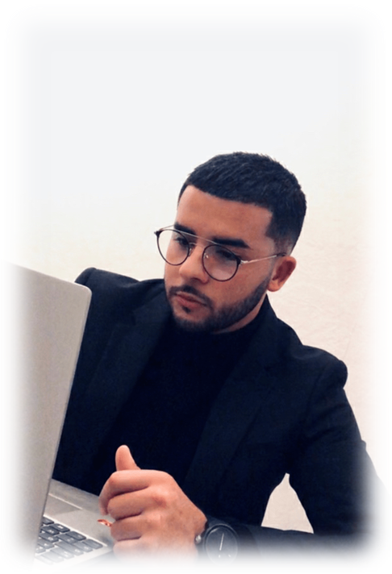

DESCRIPTION
Cursus
 Actuellement en alternance au sein de l'entreprise XEFI INFORMATIQUE à Chambéry, je m'épanouis pleinement dans mon domaine d'activité à travers la résolution d'incidents, l'installation de nouveaux composants et la préparation de matériel informatique.
J'effectue ma formation à ECORIS, celle-ci m'apprend à allier théorie et pratique.
Profil
Ayant toujours été attiré par la monde de l'informatique, je souhaiterais mettre à profit mes compétences et expériences acquises pour en faire mon métier, le métier de technicien réseau informatique.
Compétences
En tant que Technicien réseaux, j’ai de bonnes connaissances générales en informatique : systèmes dexploitation (Windows, Unix/Linux), logiciels bureautiques, PC et laptop, antivirus, imprimantes, serveurs etc. Je suis surtout quelquun de débrouillard qui aime résoudre des problèmes techniques et aider les utilisateurs. Je possède des qualités humaines comme l'écoute, la patience et la pédagogie. Un petit aperçu de mes compétences techniques vous sont décrites dans mon Curriculum Vitae.
Mes projets futurs
J'envisage, tout d'abord, une licence à Ecoris en Cybersécurité ! C'est le moyen d'obtenir plus de connaissance, dans un domaine croissant en ce moment.
Je réflechi d'avantage à poursuivre mes études jusqu'en master, voir une école d'ingénieur !